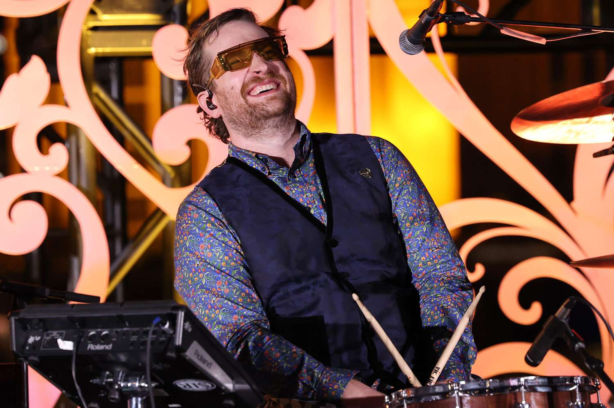

Sobre a Banda

- Imagine Dragons é uma banda de rock alternativo formada em Las Vegas. Conhecida pelos seus sons únicos e letras intensas, a banda ganhou fama internacional com o álbum 'Night Visions'.
- As músicas da banda abordam temas profundos como saúde mental, superação, identidade e crítica social, o que contribui para uma conexão emocional forte com o público.
Sobre cada um
Dan Reynolds (Vocalista)
Dan é o carismático vocalista e fundador da banda. Nasceu em Las Vegas e é conhecido pela sua voz poderosa e pela escrita de letras com temas emocionais e sociais. Além da música, é ativista da saúde mental e dos direitos LGBTQ+.
Wayne Sermon (Guitarrista)
Wayne é o guitarrista principal e responsável por muitos dos arranjos melódicos da banda. Formado em música clássica, trouxe uma abordagem técnica e criativa que ajudou a definir o som único do grupo.
Ben McKee
(Baixista)
Ben é o baixista da banda e também participa nos arranjos e composições. Com formação musical sólida, traz uma base rítmica coesa às músicas e é conhecido pela sua versatilidade instrumental.
Daniel Platzman (Baterista)
Daniel é o baterista e também contribui com vocais e composição. Com um estilo enérgico e técnico, dá vida à intensidade rítmica característica das canções da banda.

História
- A banda Imagine Dragons surgiu de uma maneira inesperada e improvável. Formada em Las Vegas, Nevada, nos Estados Unidos, a história de sua criação é marcada por um encontro casual entre seus membros fundadores. Dan Reynolds, o vocalista e principal compositor do grupo, não imaginava que sua paixão pela música o levaria a formar uma das bandas de rock mais bem-sucedidas da atualidade.
- Tudo começou quando Reynolds, um jovem com uma voz poderosa e uma habilidade natural para a composição, decidiu se mudar para Las Vegas em busca de novas oportunidades. Lá, ele conheceu o baterista Andrew Tolman, que compartilhava de seu entusiasmo pela música. Juntos, eles começaram a se apresentar em pequenos eventos e bares da cidade, construindo aos poucos uma base de fãs leais.
- Ao longo do caminho, a banda foi se consolidando com a adição de outros membros talentosos, como o guitarrista Wayne Sermon e o baixista Ben McKee. Apesar dos desafios iniciais, como a dificuldade em encontrar um nome adequado para a banda, eles persistiram em sua busca por um som único e diferenciado. Com uma mistura de rock alternativo, pop, folk e elementos eletrónicos, os Imagine Dragons conquistou seu espaço no cenário musical, superando obstáculos tornando-se assim uma das vozes mais marcantes do rock contemporâneo.